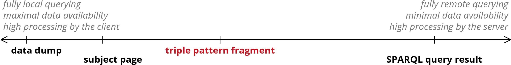

Publishing Linked Data under time constraints
Laurens Rietveld
-
My research is about
Balancing completeness and timeliness with respect to answering SPARQL queries
-
I'm trying to achieve
Exploring and quantifying this balancing act.
Work in progress: feedback welcome!
-
My research question is
How do existing Linked Data publishing tools behave under time-constraints.
-
Why you want to listen
A different evaluation approach: measuring how something performs in a constraint environment
Problem
- 600.000+ Linked Data documents vs. 260 SPARQL endpoints
- Difficult to host Linked Data via API
- Those datasets that are published via an API can be slow
- How do such APIs perform in a constraint environment?
- Our dimension: Time-constraints

Verborgh, Ruben, et al. "Web-scale querying through linked data fragments." Proceedings of the 7th Workshop on Linked Data on the Web. 2014.
Triple Pattern Fragments API
SPARQL
Triple Pattern Fragment
SPARQL → Triple Pattern Fragments
Completeness
- Relevance Based Sampling: SampLD[1]
- Find the smallest possible RDF subgraph, that covers the maximum number of potential queries
[1] Rietveld, Laurens, et al. "Structural Properties as Proxy for Semantic Relevance in RDF Graph Sampling." The Semantic Web–ISWC 2014. Springer International Publishing, 2014. 81-96.
Recap
- Complete Dataset via SPARQL
- Incomplete Dataset via SPARQL (SampLD)
- Complete Dataset via Triple Pattern Fragments
Constraints
- How complete is the query response after x seconds?
- Interaction guidelines
- 0.1 sec: The limit for having the user feel that the system is reacting instantaneously
- 1 sec: The limit for the user's flow of thought to stay uninterrupted
- 10 sec: The limit for keeping the user's attention
Card, Stuart K., George G. Robertson, and Jock D. Mackinlay. "The information visualizer, an information workspace." Proceedings of the SIGCHI Conference on Human factors in computing systems. ACM, 1991.
Results????
- Recall after x seconds:
- Complete Dataset via SPARQL: [0,1]
- Dataset sample via SPARQL: [0-1]
- Complete Dataset via TPF: [0-1]
Conclusion
- Analysis of publishing Linked Data in a constraint environment
- Three approaches
- Complete Dataset via SPARQL endpoint
- Incomplete Dataset via SPARQL endpoint (SampLD)
- Complete Dataset via Triple Pattern Fragments
- No results yet
- Feedback?